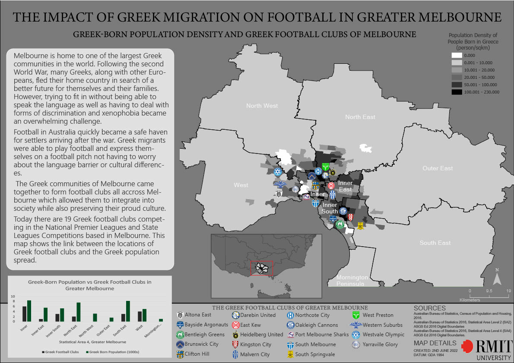
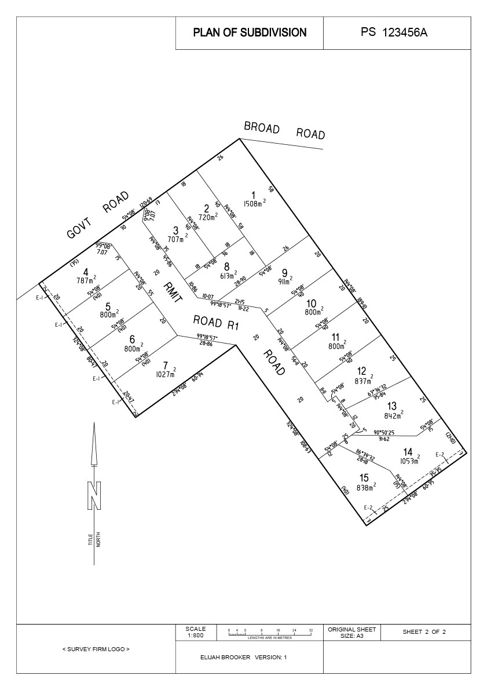
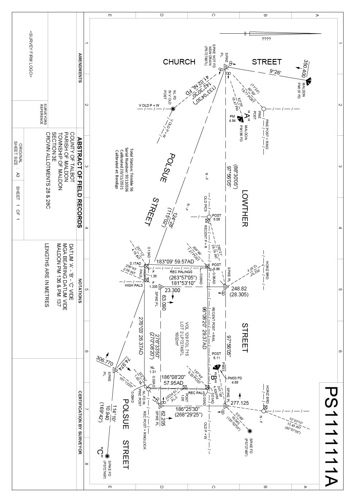
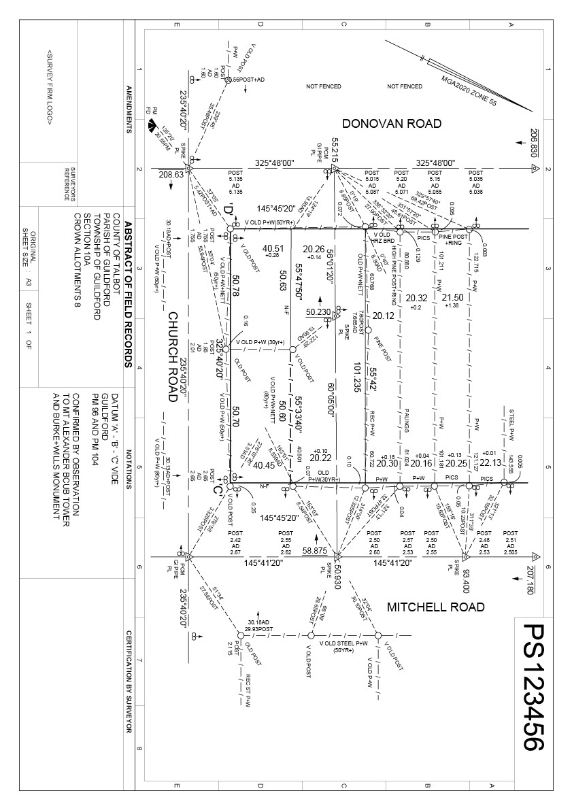

Geoportfolio
Elijah Brooker
About
This website is the geoportfolio of Elijah Brooker. The website entails
information that is academically and profesionally related to the field of surveying.
A brief introduction about myself is that I am born and raised in Griffith NSW, Australia and as of September 2024, I am in my fourth and final year of the
Bachelor of Applied Science (Surveying) (Honours) course at RMIT University. I have experience surveying with Chris Smith and Associates and interest in a variety of different types of surveying such as land surveying, engineering surveying, and building surveying.
My own personal hobbies include playing and watching football and travelling.
Academic Portfolio Overview
Cartography
Cartography is the practice of making and using maps. In this subject I was able to learn professional mapmaking skills to design different maps using a range of spatial data. The course advanced my skills in adobe illustrator and enhanced my knowledge of the spatial data that is widely available in Victoria. Furthermore, through practical learning I developed my understanding on concepts including cartographic design principles, graphic layout and typography for maps. Two maps which I created for this subject are listed below, and images of each map are below.
- Practical 2: Map of the famous laneways of Melbourne.
- Final Cartography Map: Map of the location of all current soccer teams in Melbourne with Greek heritage.
Below are the three maps that I have created as part of my course:
Note: If map display is too small, right-click the image and 'Open in new tab' to allow zooming of the map.
Melbourne Map: Map of the Laneways in Melbourne

Cartography
Final Cartography Map: Map of the location of all current soccer teams in Melbourne with Greek heritage

Cadastral Survey Practice & Law
Cadastral Surveying Practice and Cadastral Surveying Law are two subjects that covered the important concepts related to cadastral surveying. Through studying these subjects I learnt about the history and evolution of Victoria's Land Tenure System and the application of the Property Law Act 1958 in relation to Crown boundaries. These subjects provided me with a good foundation of knowledge and skills which I can apply in the future if I wish to become a registered Licensed Surveyor. I was able to develop my practical skills through the process of completing urban and rural re-establishment plans as well as Plan for Subdivision. Below are three images which consist of a Plan of Subdivision, an urban Re-establishment Plan, and a rural Re-Establishment Plan. These plans were completed using intricate calculations based on survey data, and AutoCad.
Note: If map display is too small, right-click the image and 'Open in new tab' to allow zooming of the map.
Plan of Subdivision

Urban Re-Establishment

Rural Establishment

Industry Experience
This page will briefly cover all my work experience (as of September 2024) within the surveying industry. The company which I have worked for is Chris Smith and Associates
This page will outline my experience gained and skills I have learned from working at Chris Smith and Associates along with an
overview of my current surveying skillset.
Chris Smith and Associates

Surveying Assistant
April 2023 - Present
My time at Chris Smith and Associates has consisted of working with senior experienced surveyors and learning about the required skills and methods used on a daily basis in the field and in the office. I have had the opportunity to improve my skills with using intricate surveying technology including Trimble total stations and GNSS, and Leica total stations and digital level. Working closely with surveyors in a business which also has engineers and planners, I have been able to see how projects come together from all aspects.
As part of the surveying team, I have been able to experience working alongside experienced surveyors to complete the fieldwork required for cadastral surveys, feature surveys, and building surveys. Through first-hand experience I have been able to develop my skills with Trimble and Leica instruments to gather the necessary survey data required to meet project specifications, ensuring accuracy, precision, and timely completion of all surveying tasks. Along with the methods used in the field, I have been able to develop my skills using software to process survey data and create survey plans. AutoCad and Liscad are the two main software packages which I have been able to practice using during my time at Chris Smith and Associates. Overall, my experience with this company has had a significant positive impact on my knowledge of the skills and methods required in the profession of a surveyor both out in the field, and in the office.
Skills and Proficiencies
 |
Surveying Techniques |
 |
AutoCad |
 |
Liscad |
 |
Adobe Illustrator |
 |
Remote Sensing |
 |
Photogrammetry and Drone Mapping |
 |
GNSS |
 |
Mathematics |
 |
Python Programming |
|
Cartography |
Credits and Attributions
The following programming languages and software were used to create the website
- HTML
- CSS
- JavaScript
- Visual Studio Basic
The deliverables contains content from the following subjects:
- Cartography 2 (GEOM2079)
- Cadastral Surveying Practice (GEOM2101)
- Cadastral Surveying Law (GEOM2102)
Special thanks to the following people who have helped me make this website with their expertise and guidance:
As per the policy of using the Flaticons with a free account, the attributions and crediting of the creators of the icons are as below:
Attributions of icons used: